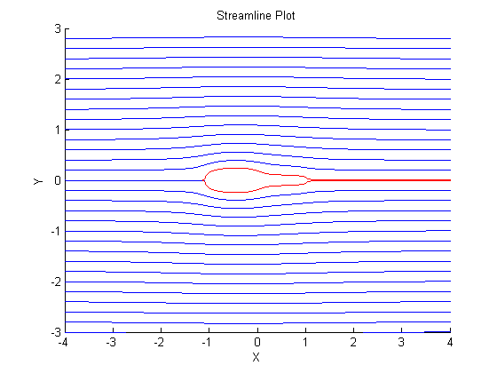
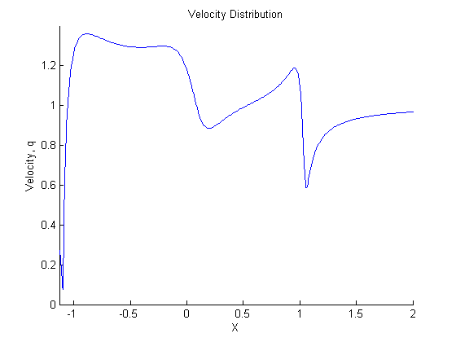
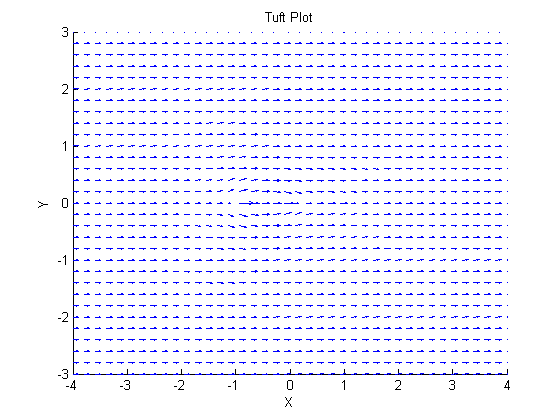
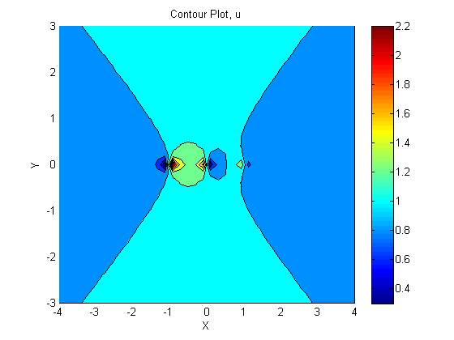
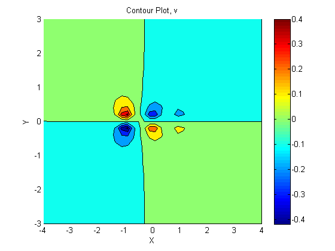

Contents
clear all
close all
clc
Known
s1 = 0.10;
s2 = -0.07;
s3 = -0.03;
xMin = -4;
xMax = 4;
yMin = -3;
yMax = 3;
[x, y] = meshgrid(linspace(xMin, xMax, 40), linspace(yMin, yMax, 31));
u = s1 .* (x + 1) ./ ((x + 1) .^ 2 + y .^ 2) + s2 .* x ./ (x .^ 2 + y .^ 2) + s3 .* (x - 1) ./ ((x - 1) .^ 2 + y .^ 2) + 1;
v = s1 .* y ./ ((x + 1) .^ 2 + y .^ 2) + s2 .* y ./ (x .^ 2 + y .^ 2) + s3 .* y ./ ((x - 1) .^ 2 + y .^ 2);
Calculations
speedResultant = sqrt(u .^ 2 + v .^ 2);
[qMin, indexQMin] = min(speedResultant(16,:));
yStagnation = 0;
xStagnation = x(16, indexQMin);
Euler Loop
T = 10;
dt = 0.01;
N = (T / dt) + 1;
xy = zeros(N, 2);
figure(5)
hold on
axis([xMin xMax yMin yMax])
title('Streamline Plot')
xlabel('X')
ylabel('Y')
for i = [1 : length(linspace(yMin, yMax, 30))]
xy(1, :) = [x(1), y(i)];
for n = [1 : N - 1]
xy(n + 1, :) = p1aEuler(xy(n, :), dt);
end
plot(xy(:, 1), xy(:, 2))
end
xyAirfoil = zeros(N, 2);
for i = [-0.001, 0.001]
xyAirfoil(1, :) = [xStagnation, i];
for n = [1 : N - 1]
xyAirfoil(n + 1, :) = p1aEuler(xyAirfoil(n, :), dt);
end
plot(xyAirfoil(:, 1), xyAirfoil(:, 2), 'color', [1 0 0])
end
qAirfoil = sqrt((s1 .* (xyAirfoil(:, 1) + 1) ./ ((xyAirfoil(:, 1) + 1) .^ 2 + xyAirfoil(:, 2) .^ 2) + s2 .* xyAirfoil(:, 1) ./ (xyAirfoil(:, 1) .^ 2 + xyAirfoil(:, 2) .^ 2) + s3 .* (xyAirfoil(:, 1) - 1) ./ ((xyAirfoil(:, 1) - 1) .^ 2 + xyAirfoil(:, 2) .^ 2) + 1) .^ 2 + (s1 .* xyAirfoil(:, 2) ./ ((xyAirfoil(:, 1) + 1) .^ 2 + xyAirfoil(:, 2) .^ 2) + s2 .* xyAirfoil(:, 2) ./ (xyAirfoil(:, 1) .^ 2 + xyAirfoil(:, 2) .^ 2) + s3 .* xyAirfoil(:, 2) ./ ((xyAirfoil(:, 1) - 1) .^ 2 + xyAirfoil(:, 2) .^ 2)) .^ 2);
figure(6)
hold on
axis([xStagnation 2 0 1.4])
title('Velocity Distribution')
xlabel('X')
ylabel('Velocity, q')
plot(xyAirfoil(:, 1), qAirfoil)
 
Plots
figure(1)
hold on
quiver(x, y, u, v)
title('Tuft Plot')
xlabel('X')
ylabel('Y')
axis([xMin xMax yMin yMax])
figure(2)
hold on
contourf(x, y, u)
colorbar
title('Contour Plot, u')
xlabel('X')
ylabel('Y')
axis([xMin xMax yMin yMax])
figure(3)
hold on
contourf(x, y, v)
colorbar
title('Contour Plot, v')
xlabel('X')
ylabel('Y')
axis([xMin xMax yMin yMax])
figure(4)
hold on
contourf(x, y, speedResultant)
colorbar
title('Contour Plot, Local Speed')
xlabel('X')
ylabel('Y')
axis([xMin xMax yMin yMax])
  